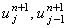
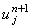
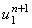
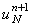
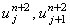
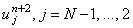
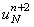
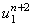

|
4.3. Метод решения разностной схемы Саульева
Разностный шаблон (см. рисунок), характеризующий первую ступень разностной схемы Саульева,
свидетельствует о том, что выражение (4.21) содержит две неизвестные величины - значения функции
u на (n + 1)-ом шаге по времени .
То есть, для определения величины  необходимо знать значение функции u в
соседней слева точке на разностной сетке. Определяя  из левого граничного условия (4.19) и
выражая из соотношения (4.21):
можно последовательно рассчитать значения функции u на (n + 1)-ом
шаге по времени , j = 2, ..., N-1. Если вместо граничных условий 1-го рода (4.19) будут заданы
граничные условия 2-го или 3-го рода, то для определения величины необходимо решить систему двух
уравнений: разностной аппроксимации левого граничного условия на (n + 1)-ом шаге по времени
и рекуррентного соотношения (4.25) при j = 2. Значение  определяется из правого граничного
условия.
Разностный шаблон (см. рисунок), характеризующий вторую ступень разностной схемы Саульева,
свидетельствует о том, что выражение (4.22) содержит две неизвестные величины - значения
функции u на (n + 2)-ом шаге по времени . То есть, для определения величины  необходимо
знать значение функции u в соседней справа точке на разностной сетке. Определяя  из правого
граничного условия (4.19) и выражая из соотношения (4.22):
можно последовательно рассчитать значения функции u на (n + 2)-ом шаге по времени .
В случае, если заданы граничные условия 2-го или 3-го рода, для определения величины
необходимо решить систему двух уравнений: разностной аппроксимации правого граничного
условия на (n + 2)-ом шаге по времени и рекуррентного соотношения (4.26) при j = N - 1.
Значение  определяется из левого граничного условия.
Таким образом, метод решения разностной схемы
Саульева существенно проще метода решения неявной разностной схемы и разностной схемы
Кранка-Николсона (т.е. метода прогонки). Однако следует обратить внимание, что поскольку
выражения (4.21) и (4.22) по отдельности не аппроксимируют исходное дифференциальное
уравнение (4.19), оценка погрешности значений функции u на (n + 1)-ом шаге по времени не
представляется возможной. Близость к истинным значениям может быть гарантирована только
для значений функции u на (n + 2)-ом шаге по времени, поэтому заданный временной интервал
должен быть изначально разделён на чётное число частей (шагов).
|